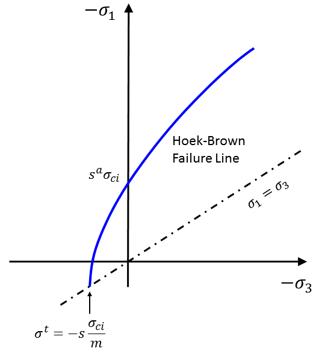

Hoek-Brown-PAC 模型
Hoek-Brown 破坏准则是描述完整岩石与岩体达到破坏的应力条件的经验关系。它在采用极限平衡解的设计方法中应用非常成功，但在数值求解方案中直接应用很少。另一种做法是把等效摩擦与黏聚力用于 Mohr-Coulomb 模型（Mohr-Coulomb model），并在特定应力水平上与非线性 Hoek-Brown 强度包络匹配。数值求解方法需要完整的本构模型，以一般方式把应力与应变联系起来；除破坏（或屈服）准则外，还需要“流动法则”，以给出破坏时应变率各分量之间的关系。已有若干从 Hoek-Brown 准则建立完整本构模型的尝试，例如 Pan 与 Hudson（1988）、Carter 等（1993）以及 Shah（1992）。这些表述假定流动法则与破坏准则有某种固定关系，且流动法则是各向同性的，而 Hoek-Brown 准则并非各向同性。本节所述表述中流动法则没有固定形式：假定它取决于应力水平，并可能取决于某种损伤度量。
下文按塑性理论术语把破坏准则视为屈服面。通常假定破坏准则是固定的极限应力条件，对应材料的最终破坏。然而弹塑性问题的数值模拟允许在“破坏”发生后继续求解，且破坏条件本身可随模拟推进而改变（通过硬化或软化）。此时谈论“屈服”比破坏更合理。对所模拟行为的类型没有隐含限制：取决于所用软化关系，既可表示延性也可表示脆性行为。
一般表述
“广义”Hoek-Brown 准则（Hoek 与 Brown，1980 与 1998），采用压应力为正的约定，为
其中 \(\sigma_1\) 与 \(\sigma_3\) 为大、小有效主应力，\(\sigma_{ci}\)、\(m_b\)、\(s\) 与 \(a\) 为可与地质强度指标（\(GSI\)）及岩体损伤相关联的材料常数（Hoek 等 2002）。附带一提，无侧限抗压强度为 \(\sigma_{c}\) = \(\sigma_{ci}\) \(s^a\)，抗拉强度为 \(\sigma_{t}\) = - \(s\) \(\sigma_{ci}\) / \(m_b\)（见 图 1（Figure 1））。注意该准则（公式 (1)）不依赖中主应力 \(\sigma_{2}\)。因此破坏包络不是各向同性的。


图 1：Hoek-Brown 破坏准则。
假定当前主应力为 (\(\sigma_1,\sigma_2,\sigma_3\))，并利用增量弹性计算初始试探应力 (\(\sigma_1^t\), \(\sigma_2^t\), \(\sigma_3^t\))：
其中 \(E_1 = K + 4G/3\) 与 \(E_2 = K - 2G/3\)，而 (\(\Delta e_1,\Delta e_2,\Delta e_3\)) 为主应变增量集合。若该组应力违反屈服判据（公式 (1)），则假定应变增量（作为模型的独立输入规定）由弹性与塑性部分组成：
注意塑性流动不在中间主应力方向发生。模型输出的最终应力 (\(\sigma_1^f\), \(\sigma_2^f\), \(\sigma_3^f\)) 与应变增量的弹性部分相关。因此：
我们假定流动法则为
其中因子 \(\gamma\) 取决于应力，并在每个时步重新计算。由公式 (5) 消去 \(\Delta e_1^p\)：
屈服时最终应力满足公式 (1)。即，
把公式 (7) 中 \(\sigma_1^f\) 与 \(\sigma_3^f\) 的值代入后，可对 \(\Delta e_3^p\) 迭代求解公式 (8)，再把它代入公式 (7) 得到最终应力。求解方法稍后描述，先讨论 \(\gamma\) 的计算。
流动法则
我们需要考虑适当的流动法则，以描述材料屈服期间的体积性状。一般地，流动参数 \(\gamma\) 将取决于应力，并可能取决于历史。当材料围压较低或为拉应力时，谈其“剪胀角”没有意义，因为破坏模式通常是轴向劈裂而非剪切。尽管体积应变以复杂方式取决于应力水平，我们考虑若干性状已知的具体情形，并通过插值确定中间条件下的性状。考虑三种情形：
关联流动法则
已知许多岩石在无侧限压缩下屈服时表现出很大的体积膨胀速率，与轴向劈裂及楔入效应相关。关联流动法则给出理论上可论证的最大体积应变率。该流动法则预期适用于单轴应力条件（\(\sigma_3 \approx 0\)）附近。关联流动法则即塑性应变率向量垂直于屈服面（当二者绘制在同类坐标轴上时）。因此，
其中下标表示主应力方向上的分量，\(F\) 由公式 (8) 定义。对该表达式求导，并利用公式 (6)，
径向流动法则
在单轴拉伸条件下，我们可能预期材料沿拉伸牵引方向屈服。若拉伸等向施加，则可设想（因为该试验几乎无法进行）材料将等向变形。这两个条件都由径向流动法则满足，假定其适用于所有主应力均为拉伸的情形。为使流速向量与主应力向量共轴，可得
等体积流动法则
随着围压增大，将达到材料在屈服时不再剪胀的状态。因此当围压高于某个用户规定的水平 \(\sigma_3 = \sigma_3^{\rm cv}\) 时，采用等体积流动法则为宜。该流动法则为
复合流动法则
我们建议依据应力状况指定流动法则（从而给出 \(\gamma\) 的取值）。在全拉伸区采用径向流动法则（\(\gamma_{\rm rf}\)）。对压缩 \(\sigma_1\) 与拉伸或零 \(\sigma_3\)，采用关联流动法则（\(\gamma_{\rm af}\)）。在区间 \(0 < \sigma_3 < \sigma_3^{\rm cv}\) 内，\(\gamma\) 的取值在关联极限与等体积极限之间线性插值：
最后，当 \(\sigma_3 > \sigma_3^{\rm cv}\) 时使用等体积值 \(\gamma = \gamma_{\rm cv}\)。
若把 \(\sigma_3^{\rm cv}\) 设为零，则模型条件趋近于剪胀角为零的非关联流动法则。若把 \(\sigma_3^{\rm cv}\) 设为相对 \(\sigma_{ci}\) 很高的值，则模型条件趋近于关联流动状态。
实现步骤
上述公式均已实现。破坏准则公式 (8) 的一个困难是：若 \(\sigma_3 < -s \sigma_{ci} / m_b\)，则 \(F\) 的实数值不存在。迭代过程中很可能遇到该条件，因此必须使 \(F\) 的表达式及其一阶导数在应力空间中处处连续。这通过采用复合表达式来满足
为启动迭代，取所有应变增量分量绝对最大值作为 \(\Delta e_3^p\) 的初值。该值记为 \(\Delta e_1\)，与由流动法则方程求得的 \(\gamma\) 值一起代入公式 (7)，所得应力值再代入公式 (14) 与 (15)。所得 \(F\) 记为 \(F_1\)。把 \(F\) 的原值取为 \(F_0\)（相应塑性应变增量取为零，即 \(\Delta e_0\)），即可用牛顿法的一种变体估计塑性应变增量的新值：
由此得到 \(F\) 的新值（记为 \(F_2\)）；若它足够接近零，则迭代停止。否则设 \(F_0 = F_1\)、\(F_1 = F_2\)、\(\Delta e_0 = \Delta e_1\) 与 \(\Delta e_1 = \Delta e_2\)，并再次应用公式 (16)。
试验表明，该迭代方案对迄今尝试的所有应力路径都收敛，包括 \(s\) = 0（无侧限抗压强度为零的材料）的情形，这在以往实现中曾引起问题。对高围压，迭代一步即收敛；而在低围压下最多需要十步（程序内置上限目前为 15）。
材料软化
Hoek-Brown 模型中，材料性质 \(\sigma_{ci}\)、\(m_b\)、\(s\) 与 \(a\) 默认假定保持不变。塑性屈服开始后的材料软化可通过指定这些力学性质按软化参数改变（即降低整体材料强度）来模拟。Hoek-Brown 模型所选软化参数为塑性围压应变分量 \(e^p_3\)。选择 \(e^p_3\) 有物理依据：在接近无围限状态屈服时，脆性岩石的损伤主要为劈裂（而非剪切），裂纹法向沿 \(\sigma_3\) 方向。预期参数 \(e^p_3\) 与 \(\sigma_3\) 方向的微裂纹损伤相关。
\(e^p_3\) 的值由对公式 (16) 算得的 \(\Delta e^p_3\) 应变增量值求和得到。软化行为通过指定把性质 \(\sigma_{ci}\)、\(m_b\)、\(s\) 与 \(a\) 各自关联到 \(e^p_3\) 的表格给出。每个表格含数值对：一个为 \(e^p_3\) 值，一个为相应性质值。假定性质在表格中两个相邻参数条目之间线性变化。
还可指定乘子 \(\mu\)（记为 multable），以把软化行为与围压 \(\sigma_3\) 联系起来。\(\mu\) 与 \(\sigma_3\) 之间的关系也以表格形式给出。（软化参数的应用见 Cundall 等（2003）。）
参考文献
Carter, T. G., J. L. Carvalho and G. Swan.《迈向地反力曲线的实际应用》，载 《21 世纪创新矿山设计（国际矿山设计大会论文集——加拿大安大略省金斯顿——1993 年 8 月）》，第 151-171 页。W. F. Bawden and J. F. Archibald 编。Rotterdam: A. A. Balkema（1993）。
Cundall, P., C. Carranza-Torres and R. Hart.《基于 Hoek-Brown 准则的一种新本构模型》，载 《FLAC 与岩土工程数值模拟——2003（第 3 届国际 FLAC 研讨会论文集，加拿大安大略省萨德伯里，2003 年 10 月）》，第 17-25 页。R. Brummer 等编。Lisse: Balkema（2003）。
Hoek, E., C. Carranza-Torres and B. Corkum.《Hoek-Brown 破坏准则——2002 年版》，载 《NARMS-TAC 2002 会议论文集：第 5 届北美岩石力学研讨会与第 17 届加拿大隧道协会会议——加拿大多伦多——2002 年 7 月 7 日至 10 日》。第 1 卷，第 267-271 页。R. Hammah 等编。Toronto: University of Toronto Press（2002）。
Pan, X. D., and J. A. Hudson.《一种简化的三维 Hoek-Brown 屈服准则》，载 《岩石力学与电厂（ISRM 研讨会论文集）》，第 95-103 页。M. Romana 编。Rotterdam: A. A. Balkema（1988）。
Shah, S. 《节理岩体性状研究》。博士论文，University of Toronto（1992）。
hoek-brown-pac 模型性质
用以下关键字配合 设置网格单元属性（zone property）（FLAC3D）或 设置块体网格单元属性（block zone property）（3DEC）命令设置 Hoek-Brown-PAC 模型的这些性质。
- hoek-brown-pac
- bulk f
体积模量，\(K\)
- constant-a f
Hoek-Brown 参数 \(a\)
- constant-mb f
Hoek-Brown 参数 \(m_b\)
- constant-s f
Hoek-Brown 参数 \(s\)
- constant-sci f
Hoek-Brown 参数 \(\sigma_{ci}\)
- poisson f
泊松比，\(\nu\)
- shear f
剪切模量 \(G\)
- stress-confining-prescribed f
Hoek-Brown 参数，用户规定水平的围压 \(\sigma^{cv}_3\)
- young f
杨氏模量，\(E\)
- table-a s (a)
把 \(a\) 与 \(e^p_3\) 关联的表格名称。
- table-mb s (a)
把 \(m_b\) 与 \(e^p_3\) 关联的表格名称。
- table-multiplier s (a)
把乘子与 \(\sigma_3\) 关联的表格名称。
- table-s s (a)
把 \(s\) 与 \(e^p_3\) 关联的表格名称。
- table-sci s (a)
把 \(\sigma_{ci}\) 与 \(e^p_3\) 关联的表格名称。
- strain-3-plastic f (r)
沿压性最小主应力方向的累积塑性应变 \(e^p_3\)
- number-iteration i (r)
迭代次数
图例
- (a) 高级属性。
- 该属性具有默认值；在较简单的模型应用中，无需专门赋值。
- (r) 只读属性。
- 该属性不能由用户设置，但可以列出、绘图显示，或通过 FISH 访问。
注意事项
- 定义弹性性质时，只需提供以下两种组合中的一种：体积模量 \(K\) 与剪切模量 \(G\)，或杨氏模量 \(E\) 与泊松比 \(\nu\)。采用后一种组合时，必须先赋予杨氏模量 \(E\)，再赋予泊松比 \(\nu\)。
| 这些内容对您有帮助吗？… 版权与免责声明 | FLAC3D © 2019, Itasca | 原文更新于 2020 年 10 月 8 日 |